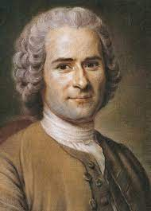
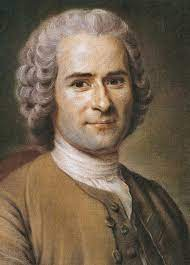

Ilustración
Esta parte se enfoca en el movimiento intelectual conocido como la Ilustración. Puede incluir información sobre filósofos destacados, ideas clave como el racionalismo y el liberalismo, y cómo estos conceptos influyeron en la política, la ciencia y la cultura de la época.
 

La Ilustración, un movimiento intelectual que floreció en Europa durante el siglo XVIII, fue un período de cambio radical en el pensamiento humano. Los ilustrados promovieron la supremacía de la razón y la ciencia, defendiendo la idea de que el conocimiento basado en la evidencia empírica y la lógica podía guiar a la humanidad hacia un futuro mejor.
Este movimiento abogó por la libertad individual, incluyendo derechos como la libertad de expresión y la propiedad privada. Además, destacó la importancia de la educación para el progreso humano y defendió la tolerancia religiosa y la separación de las esferas religiosa y política. La Ilustración también cuestionó el poder absoluto de los monarcas y promovió formas de gobierno más justas y participativas.
Filósofos y escritores ilustrados produjeron una gran cantidad de obras literarias y ensayos que difundieron estas ideas, influenciando profundamente la política, la economía y la cultura. Este movimiento sentó las bases para revoluciones posteriores, como la Revolución Francesa, y dejó una marca indeleble en la forma en que la sociedad occidental piensa sobre la razón, la libertad y el progreso humano.